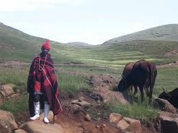
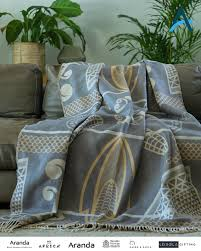
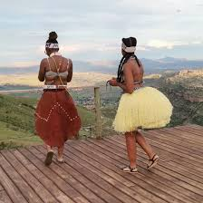

Basotho Attairs
Moaparo oa bale
Women wear that clothes from the initiation school and pat themselves and sing
Thethane
It is a simple shed of string attached on a string that goes around the waistwww.tripadvisor.com

Seshoeshoe
a traditional cloth with lesotho 's design pattern and can make dress, any clothes and even hats
Moaparo oa mokhibo

Big dresses are worn and a shirt with cloth tied to the head and hold a kite object like a shield and hold a stick in the other hand
Moaparo oa litolobonya
A shirt is worn and bottle caps attached to shred pieces that make a big dress
Moaparo oa ntlamu
A cloth is tied to the head, hand, legs and cloth that covers the back and front.Beads are worn on the ankles to make sound when moving the legs.
Moaparo oa mohobelo
A shirt is worn with a long formal trouser and hold a stick which will raised up countless times
Seanamarena
A blacket with patterns usually worn at weddings
Lihoba
A blanket with vibrant colours worn at community gatherings
Victoria-England
A blankets with patterns was a gift to king by Queen Victoria
Bantu-nation
The blanket that is colourful and usually worn by women
Makupana
The blankets that is grey and has black design
Letlama
The blanket is brown has black design and worn after initiation
Mosolanka
The blanket that is black usually has red designs on the bottom
LiKhohlopo
Rubber shoes worn most by sherpards
Katiba ea balisana
A hat that shows only the eyes or can be wore like a hat and it is most worn by sherpards
Thari
Cloth used to carry a baby on the back
Lifaha
This are lases worn on the body made of beads
Lekoko
A leather that is left on the sun to dry and then cut up to make any design
Likausi tsa balisana
The long socks that are worn with gumboots
Ts'eea
The cloth made like pants and sometimes has decoration of any materials like pins and many more
Taeela
The blanket with various colours usually light brown and other colours
Letsoku
A red clay worn by men who are from the initiation school
Tjale
A blanket worn by women and usually worn when a women is getting married
Kobo ea korone
The blanket has design of crown
Kharetsa
A blanket that has spiral aloe designs
Kobo ea Letsatsi
The blanket that design of sun
Chabana sa khomo
The blanket design to commemorate 200th Lesotho anniversary
kobo ea moshoeshoe
The blanket has design of moshoeshoe 1 and shields
Kobo ea lefokololi
A blanket that has a design of centipite on it
Lehlosi
A blanket made for the king
Sefatla

A shoe made from leather
Mose wa lekoko
A dress made of leather and worn by orderly women
Lesira

A mask hides the face of women that are from the initiation school